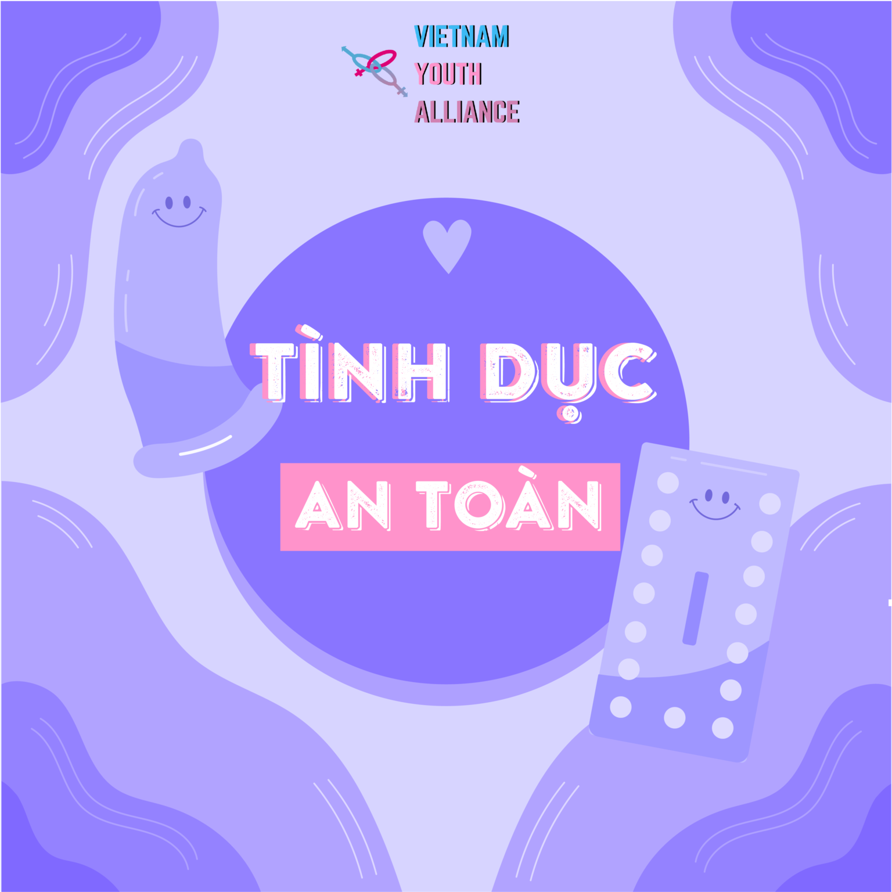

Tình dục an toàn

Năm 2016, Quốc hội Đức ban hành luật bắt những người hành nghề mại dâm sử dụng bao cao su. Trao đổi một cách thẳng thắn và cởi mở về tình dục an toàn dường như là một chuyện rất khó khăn, nhưng bảo vệ bản thân mình sẽ giúp bạn phòng ngừa các bệnh lây truyền qua đường tình dục (STI) và mang thai ngoài ý muốn. Bạn thân mến, khi nói về các bệnh lây nhiễm qua đường tình dục, hãy nhớ một câu: “phòng bệnh hơn chữa bệnh”.
Nhưng mà khoan đã, tình dục an toàn là gì?
Hiểu đúng về tình dục an toàn
Trong quan hệ tình dục, ngoài chú ý đến khoái cảm cũng cần phải hết sức cẩn thận với sức khỏe sinh sản của cả bạn lẫn bạn tình của bạn. Nếu bạn nghĩ quan hệ tình dục an toàn chỉ gói gọn trong một chiếc bao cao su, bạn nhầm to rồi. Bao cao su là rất quan trọng, nhưng còn nhiều vấn đề khác cần được để cập cả trước và sau khi quan hệ:
- Trước khi quan hệ: Hãy chở nhau ra cửa hiệu thuốc, chuỗi cửa hàng uy tín, các siêu thị,... và cùng chọn màu, kích cỡ hoặc vị cho bao cao su hoặc miếng bảo vệ miệng (dental dam) mà các bạn sẽ dùng. Bao cao su giúp bảo vệ bạn khỏi việc tiếp xúc trực tiếp giữa miệng với âm hộ hoặc hậu môn. Rất nhiều người quên không dùng đến một dụng cụ rất rẻ đó là găng tay. Găng tay vừa là công cụ vừa túi tiền vừa an toàn nữa! Nếu không đi cùng nhau được thì hãy chọn trước đi nhé, mười sao chủ động thuộc về bạn.
- Hãy hỏi. Nhiều người không biết phần quan trọng này. Hãy hỏi trực tiếp bạn tình xem họ đã đi xét nghiệm STI hay chưa. Nếu có thì kết quả ra sao. Nếu chưa, thì bây giờ chính là thời điểm thích hợp đó. Xét nghiệm STI khi bạn hoặc người yêu của bạn có bạn tình mới. Nếu bạn có bạn tình mới thường xuyên, hãy xét nghiệm STI sau mỗi 3 – 6 tháng. Nếu bạn có triệu chứng nhiễm STI, hãy đi kiểm tra ngay.
- Và cân nhắc. Hãy cân nhắc các hoạt động tình dục không dẫn đến việc mang thai ngoài ý muốn hoặc có nguy cơ lây nhiễm STI thấp hơn (chẳng hạn như quan hệ tình dục bằng ngón tay hoặc bằng miệng). Đồng thời, hãy tiêm vắc-xin có sẵn để phòng ngừa viêm gan B và một số chủng virus HPV, tức “Siêu vi trùng papilloma ở người” (Human papillomavirus) để tăng cường sự bảo vệ.
Cản trở
Nguồn: Dribble.com
Giờ thì bạn đã hiểu biết hơn về tình dục an toàn, nhưng chắc gì (những) người kia cũng hiểu biết như vậy? Làm sao để nói với họ bây giờ?
Về cơ bản, trong bạn có thể hình thành những suy nghĩ sau:
- Lo sợ phản ứng của bạn tình
- Bạn sợ bạn tình của bạn sẽ trêu đùa, chỉ trích, chế nhạo bạn hoặc từ chối quan hệ tình dục với bạn.
- Bạn định quan hệ tình dục với một người bạn mới gặp hoặc không muốn nói chuyện về tình dục an toàn.
- Bạn nghĩ rằng vấn đề tình dục an toàn làm tắt đi hứng thú trong tình dục.
- Bạn tình của bạn có thể cho rằng họ không có nguy cơ mắc STI. Nhưng, trên thực tế, bất kỳ ai thuộc bất kỳ giới tính, xu hướng tính dục, sắc tộc, tầng lớp hay nghề nghiệp nào cũng có thể mắc STI. Các biện pháp tránh thai nội tiết tố như thuốc viên không thể bảo vệ bạn khỏi STI.
- Thiếu kiến thức hoặc kinh nghiệm
- Bạn hoặc bạn tình của bạn có thể không hiểu rõ về cách sử dụng bao cao su, tấm bảo vệ miệng hoặc găng tay.
- Giới hạn thể lực, tâm lý
- Bạn có thể đang trong quá trình uống hoặc sử dụng thuốc.
- Bạn đang trong một mối quan hệ bạo hành, và cảm thấy mình không có khả năng đề nghị quan hệ tình dục an toàn.
Trò chuyện thẳng thắn và cởi mở với đối phương có thể khá khó khăn, nhưng đó là cách tốt nhất để chăm sóc sức khỏe tình dục của bạn và giảm thiểu rủi ro mà tình dục không an toàn mang lại. Có thể khi chủ động đưa ra vấn đề, bạn sẽ nhận ra đối phương cũng đang muốn trao đổi với bạn điều tương tự đấy!
Bắt đầu thôi!
Nguồn: https://dribbble.com
Đối phương là ai? Bạn biết gì về họ? Cách để bạn bắt đầu một cuộc trao đổi về tình dục an toàn sẽ phụ thuộc vào những yếu tố này. Dưới đây là một số lời khuyên:
Trước tiên, hãy suy nghĩ xem bạn sẽ nói những gì. Nghiên cứu về tình dục an toàn trước đó để biết cũng như đề ra những ranh giới và biện pháp tình dục an toàn mà bạn muốn. (Bạn luôn có thể là người chủ động!)
Nếu bạn và đối phương đã trao đổi về một số chủ đề không thoải mái lắm trước đây thì điều gì có thể và không thể nói? Hãy tận dụng những gì mà bạn biết về người bạn đang nói chuyện cùng.
Chọn một thời điểm khi bạn có đủ thời gian và sự riêng tư để trò chuyện, đồng thời chọn thời điểm bạn và đối phương đều đang có tâm trạng tốt. Nếu một trong hai đang cảm thấy quá mệt mỏi, đang có một ngày không suôn sẻ hay đang vội thì cả hai sẽ khó có thể hiểu nhau được.
Nếu bạn không biết nhiều về người mình sắp quan hệ tình dục cùng, hãy mang sẵn những dụng cụ hỗ trợ tình dục đang có, lấy chúng ra rồi thoải mái và rõ ràng mà nói với họ: “Tôi sẵn sàng rồi, cậu thì sao?”
Thể hiện cảm nhận của bạn về tình dục an toàn một cách rõ ràng, trung thực và tích cực để đảm bảo không có sự hiểu lầm. Dùng đại từ nhân xưng “tôi” trong lời nói để nói về cảm giác của bạn và những gì bạn muốn, hơn là những gì bạn nghĩ đối phương cảm thấy hoặc muốn.
Đùa cợt về vấn đề này có thể khiến bầu không khí trở nên gượng ép. Vì vậy, hãy tránh trêu chọc hoặc đùa cợt nha.
Nếu khó nói chuyện một cách thẳng thắn, bạn có thể thử nói: “Này, cậu thấy bao cao su bao giờ chưa?”, hoặc đề cập đến một bài báo mà bạn đọc được về tình dục an toàn (có thể chính là bài này :) ) để bắt đầu trao đổi.
Nói về bất kỳ loại quan hệ tình dục nào, bao gồm cả tình dục an toàn, đều có thể gợi lên những bất an cũng như những nỗi sợ của người khác và dễ dẫn đến những phản ứng tiêu cực. Nếu điều đó xảy ra, đừng tự ái hoặc quy chụp đối phương. Hãy nhìn nhận cảm giác của người đối diện, tháo gỡ những hiểu lầm và cho họ thời gian để nghĩ về lời nói của bạn nha.
Đôi khi người ta sẽ phản ứng tiêu cực dựa trên những trải nghiệm xấu trong quá khứ, thông tin sai lệch hoặc nỗi sợ hãi. Nhưng đừng lo! Hãy chuẩn bị sẵn thông tin từ bên ngoài chẳng hạn như các bài viết từ các nguồn tin sức khỏe tình dục đáng tin cậy, nó có thể giúp phá vỡ những quan niệm sai lầm và cung cấp sự thật chính xác. Điều này có thể đặc biệt hữu ích nếu bạn mắc STI và dự định nói với người kia của mình.
Nhắc nhở đối phương rằng quan hệ tình dục an toàn không có nghĩa là giảm bớt khoái cảm.
Thỏa thuận rõ ràng về những biện pháp tình dục an toàn bạn sẽ sử dụng. Điều này có thể bao gồm sử dụng bao cao su, xét nghiệm STI, có một bạn tình cố định hoặc sử dụng các công cụ tình dục an toàn khi quan hệ tình dục với người khác.
Ủng hộ việc người kia trò chuyện về tình dục an toàn với bạn.
Hãy nhớ, bạn có quyền được an toàn và đối phương nên tôn trọng yêu cầu của bạn về tình dục an toàn. Nếu đối phương vẫn không đồng ý với bạn về quan hệ tình dục an toàn hoặc cố gắng ép bạn quan hệ tình dục khi không có sự bảo vệ mà bạn yêu cầu, hãy tự hỏi xem liệu họ có phải là người mà bạn vẫn muốn quan hệ cùng hay không.
Tình dục an toàn, phiên bản khêu gợi
“Rút lui” khỏi việc dùng biện pháp tình dục an toàn khi đang trong quá trình quan hệ rất đơn giản. Tuy vậy, hãy cố chuẩn bị sẵn công cụ hỗ trợ tình dục cầm tay. Với một chút sáng tạo và tinh nghịch, tình dục an toàn vẫn có thể trở nên thật lôi cuốn. Sau đây là một vài gợi ý:
- Thử bao cao su, tấm bảo vệ miệng hoặc găng tay với nhiều màu sắc, kiểu loại và kết cấu khác nhau và biến những thử nghiệm này trở nên thật thú vị.
- Thử đeo bao cao su cho chính mình nếu bạn là người có dương vật. Hoặc bạn cũng có thể đeo bao cao su cho dương vật giả hay quả chuối khi bạn ở một mình để tập luyện. Càng quen thuộc với các công cụ hỗ trợ tình dục an toàn, bạn sẽ càng sử dụng chúng một cách dễ dàng.
- Nếu bạn có dương vật, hãy thủ dâm trong lúc đeo bao cao su để giúp não liên kết khoái cảm cũng như đạt cực khoái với bao cao su.
- Sử dụng găng tay, tấm bảo vệ miệng và bao cao su trong các trò chơi quan hệ tình dục. Khẩu dâm (Dirty talk) trong lúc bạn đeo bao cao su, tấm bảo vệ miệng hoặc găng tay làm tăng hứng thú trước khi quan hệ. Đeo bao thật chậm rãi để chọc ghẹo đối phương, khiến họ phải chờ đợi. Thử nghiệm với quần áo latex hoặc đóng kịch (role-play).
- Đeo bao cao su cho bạn tình bằng tay hoặc miệng.
- Bôi dầu bôi trơn vào đầu bao cao su ngoài trước khi đeo vào dương vật, hoặc bôi vào bên trong bao cao su trong trước khi đặt vào bên trong âm đạo hoặc hậu môn. Thêm dầu bôi trơn vào âm đạo hoặc hậu môn, hoặc bên ngoài bao cao su ngoài.
Bây giờ là 19 giờ, và bạn giờ là nghệ nhân của làng tình dục an toàn. Trước khi bạn tắt tab, chúng tôi có hai lời nhắc nhở:
- Hãy chủ động! Đừng trông chờ người kia nói với bạn rằng họ bị nhiễm STI hoặc bảo bạn sử dụng biện pháp tránh thai. Mọi người đều phải có trách nhiệm với sức khỏe tình dục của chính mình.
- Xem bài "Những công cụ tình dục an toàn" để biết thêm thông tin về các công cụ tình dục an toàn.
Cuộc tình dù đúng dù sai thì chúng ta vẫn phải bảo vệ bản thân trước. VYA mong rằng sau bài viết này, độc giả đã có thêm kiến thức về tình dục an toàn và cảm thấy thoải mái hơn khi nói chuyện với bạn tình về vấn đề này nhé!
Tài liệu tham khảo
Talking about Safer Sex